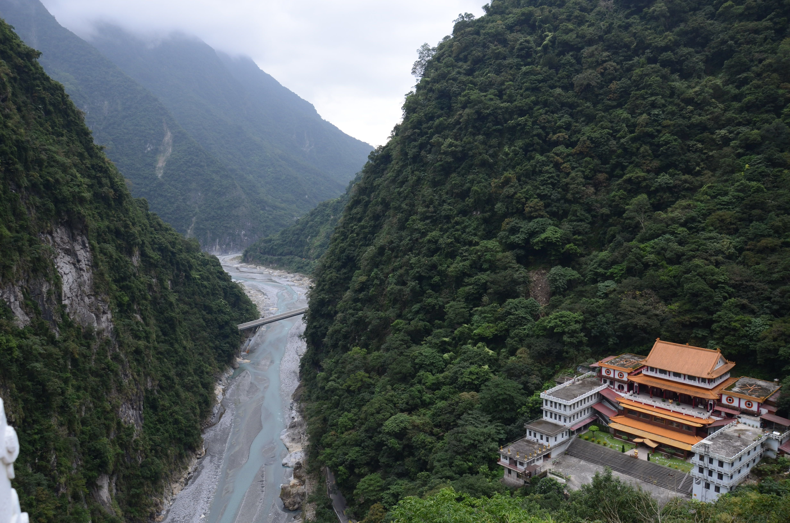
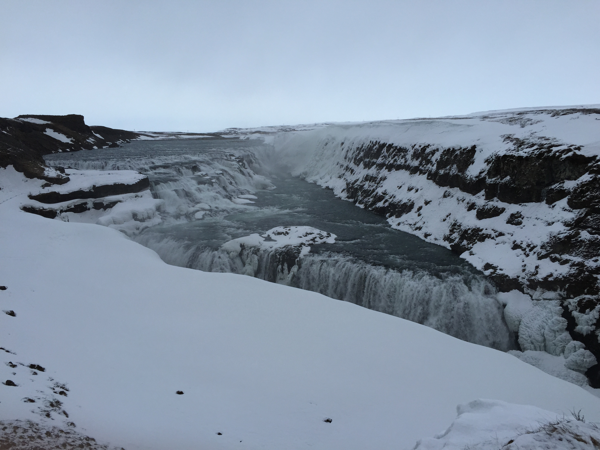
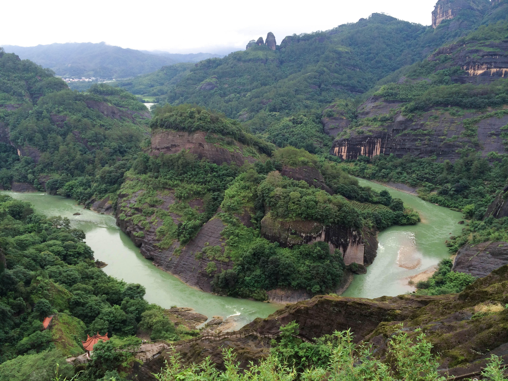
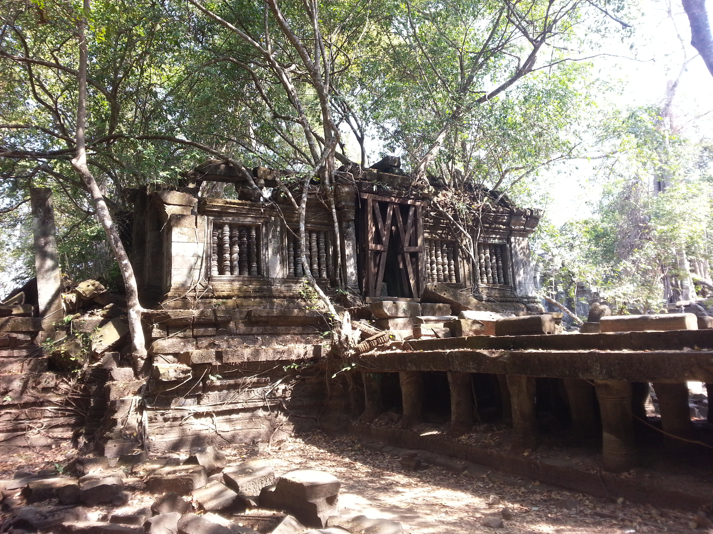

Me in front of Heaven's Peak mountain in Glacier National Park, Montana. 2010.

Taroko Gorge (left) with Chan Guang Temple (right foreground), Hualian, Taiwan. 2011.

Gullfoss Falls, Iceland. Gullfoss means "Golden Falls" in Icelandic and looks semi-frozen in the winter. 2015.

Wuyi Mountain National Park, Fujian Province, China. Known for it's unique cliffs and high-quality tea. 2014.

Beng Mealea Temple, Siem Reap Province, Cambodia. One of the entrances to the temple, which is less frequently visited than Angkor Wat, but more impressive in many ways. 2014.
Na Pali Coast, Kauai, Hawaii. The first vista, about 30 minutes into the hike, and one of the few places on the island where you're unlikely to find a chicken. 2016.